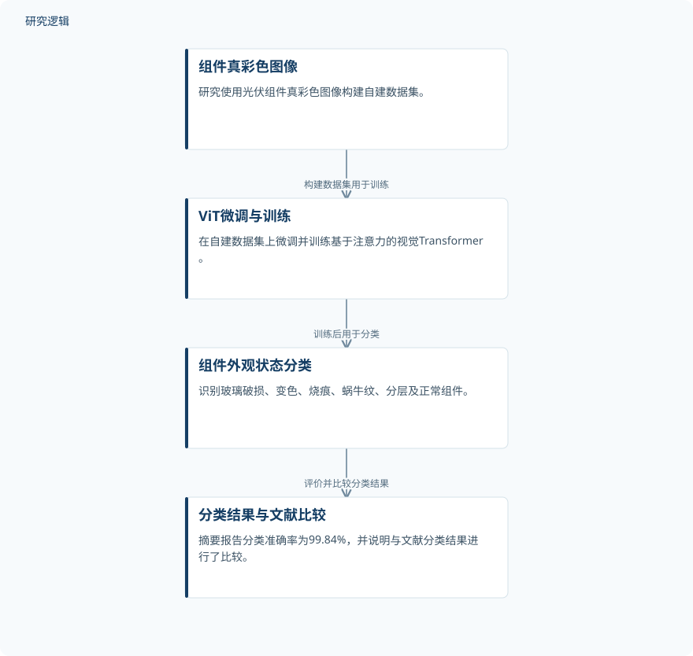

摘要解读
基于注意力深度学习网络的光伏组件智能故障检测
Intelligent fault detection in photovoltaic modules using attention-based deep learning network
解读更新 2026-11-10 17:25 · 依据公开摘要整理，未核验全文细节
光伏组件的外观异常能否通过图像自动识别，为日常巡检提供辅助？这项研究使用视觉Transformer处理组件真彩色图像，报告了较高的分类准确率；阅读重点是区分图像分类表现与实际运维能力。
文章目录
从组件外观异常切入光伏故障诊断
光伏系统在服役期间可能因环境条件、人为错误和设备失效出现故障。研究将智能故障诊断与保障发电、维持理想运行状态的需求联系起来，具体关注能够通过组件外观图像识别的异常。
摘要列出的识别对象包括玻璃破损、变色、烧痕、蜗牛纹和分层，同时包含正常组件。因此，这里的任务不仅涉及异常类别之间的区分，也包含正常状态的识别；不能把这些类别全部称为故障。
以真彩色图像微调视觉Transformer
研究建立了包含不同故障光伏组件真彩色图像的自建数据集，并采用基于注意力的深度学习网络——视觉Transformer（ViT），在该数据集上进行微调和训练，用于自动识别组件的可见异常与正常状态。
摘要明确给出了图像数据构建、模型微调与训练之间的关系，但没有介绍具体网络配置、图像预处理或训练参数。仅凭当前资料，不宜补写模型如何提取局部缺陷特征，也不能推断其是否输出缺陷位置。
依据摘要整理的图像分类研究过程


仅概括摘要明确陈述的数据构建、模型训练与分类结果，不代表论文原图，也不表示已完成现场部署验证。
下载 SVG图示关系说明
实线表示相邻阶段的信息流，虚线表示跨阶段联系或反馈。
组件真彩色图像 → ViT微调与训练：构建数据集用于训练；ViT微调与训练 → 组件外观状态分类：训练后用于分类；组件外观状态分类 → 分类结果与文献比较：评价并比较分类结果
报告99.84%分类准确率，部署仍属潜在用途
训练后的ViT模型在光伏组件故障检测与分类任务上取得了99.84%的分类准确率。摘要还说明，作者将所得分类结果与文献中报道的其他分类结果进行了比较，但未提供具体比较对象、数值或评价设置。
作者提出，该模型未来可能集成到现有巡检系统中，用于自主、实时、高效且稳健的状态监测。这里应保留“可能”的限定：摘要报告的分类结果，并不等于已经验证了现场实时巡检能力或发电收益。
高准确率背后的样本与验证边界仍待核对
摘要未报告图像数量、独立组件数量、类别分布、数据划分方式及是否使用数据增强，因此无法判断样本代表性，也无法确认训练与测试之间的独立性。这是当前摘要的信息边界，不意味着论文没有开展相关工作。
文献比较是否采用相同数据和评价协议，模型是否经过跨场景或独立现场验证，以及各类别的误判情况，当前资料均无法判断。因此，不能仅据总体分类准确率认定其普遍优于其他方法，或已满足实际部署要求。
阅读启发：把分类成绩与运维适用性分开看
阅读启发：后续阅读可重点核对数据划分、类别级表现及文献比较的可比性，理解高准确率对应的具体评价边界。对于智能运维，更值得追问的是模型在什么图像和组件条件下可靠，以及作者如何支撑其接入巡检系统的潜在用途。
以上为本站阅读启发与建议，不是论文已验证的结论。